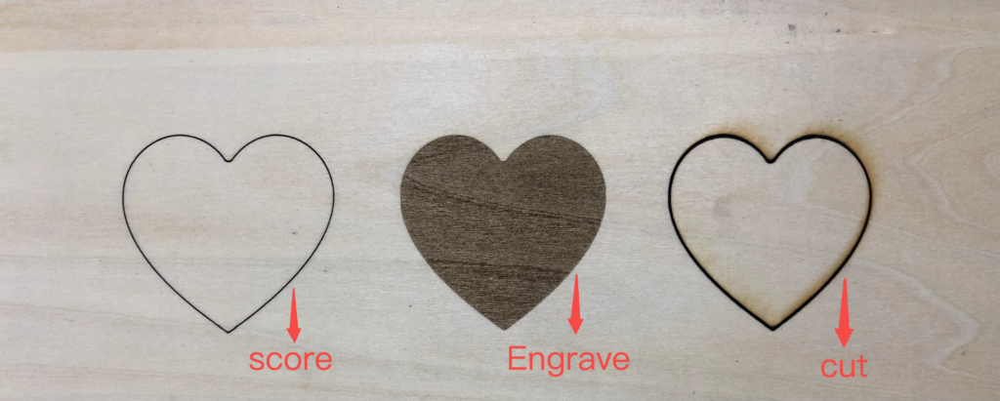

DAY 1 · FIRST LOOK
Read a Finished Laser-Cut Sample
Before you build a file, learn to recognize what the machine did to the material.
Objective
Use visible evidence to identify cut, score, and engrave operations.
Use visible evidence to identify cut, score, and engrave operations.
You need
A finished sample or the projected photo, plus the First Look worksheet.
A finished sample or the projected photo, plus the First Look worksheet.
Turn in
Your completed worksheet and one evidence sentence. 5 points.
Your completed worksheet and one evidence sentence. 5 points.
File view | Open when directed
Open the Cut, Score, Engrave sample tile SVG
Commit to your visible evidence before you inspect the file.
Open the Cut, Score, Engrave sample tile SVG
{kind=link}
Commit to your visible evidence before you inspect the file.

Operation comparison from xTool Support, “What is the Difference between Engrave, Score, and Cut?”
What the operations leave behind
Cut
The line travels through the material and separates a piece.
The line travels through the material and separates a piece.
Score
A thin line stays on the surface.
A thin line stays on the surface.
Engrave
A filled or shaded area is removed from the surface.
A filled or shaded area is removed from the surface.
How the file connects
- Vector path or stroke: a line the software can assign to cut or score.
- Filled vector shape or raster image: an area the software can assign to engrave.
- Important: your file does not choose safe settings. The trained operator checks the material, size, placement, and operation settings before the machine runs.
Machine boundary
Stay outside the machine work zone unless directed. Never bring material from home for the laser. If the material is not approved for the exact machine, it does not go in.
Complete the First Look worksheet
- Sketch and label the finished sample or projected photo.
- For each operation, mark Found or Not used.
- Point to visible evidence: an opening, outside edge, thin surface line, or filled surface area.
- Connect one visible result to the file element that probably made it.
- Upload a clear scan or photo of the worksheet. Add the sentence below in the submission comment.
Sentence stem: The laser used ______ to ______. I know because ______.
Word bank: cut · score · engrave · edge · opening · surface · path · stroke · fill · through
Word bank: cut · score · engrave · edge · opening · surface · path · stroke · fill · through